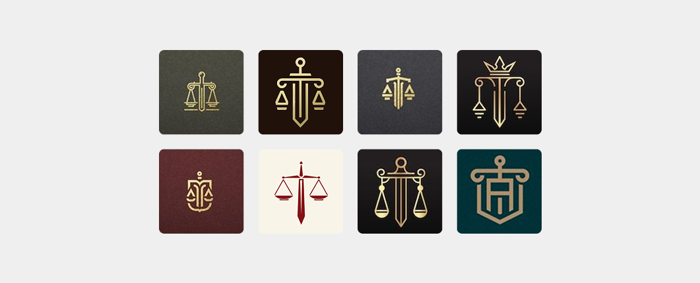

Você nunca precisou de um logo
Uma das primeiras coisas que todo empresário faz ao abrir um negócio é correr atrás de um logo.
Está errado.
Não porque logo seja inútil. Mas porque ninguém abre uma empresa porque viu um logo bonito. Você abriu seu negócio porque resolve um problema, atende um tipo específico de cliente, oferece algo que faz sentido no mercado. Tudo isso é marca. O logo é só uma pequena parte visual de algo muito maior e quando ele vem antes da estratégia, vira decoração.
Por que todo logo do seu mercado parece o mesmo
Pega o seu segmento e abre o Google.
Se você é contador, vai ver dezenas de logos com colunas gregas, balanças, ícones de gráfico ou planilha, todos em azul-marinho. Se é advogado, balança da justiça em dourado e preto. Clínica? Caduceu, folhinha verde, coraçãozinho azul. Construtora? Capacete sobre prédio estilizado.
São todos iguais.
Não comunicam nada. Não se conectam com ninguém. Qualquer um desses logos poderia pertencer a qualquer empresa do segmento e é exatamente esse o problema.
O que você precisa não é de um logo. É de uma identidade visual e verbal que transmita algo real sobre o seu negócio antes de você abrir a boca.
Uma identidade bem construída responde, em segundos, a perguntas como:
- Para quem essa empresa é?
- O que ela valoriza?
- Por que eu deveria escolher ela em vez das outras?
Quando essas respostas estão claras no visual, no tom, na forma de aparecer você economiza tempo de venda. O cliente já chega meio convencido. Você não precisa gastar metade da reunião explicando quem você é.
Apple e Huawei vendem o mesmo produto. E não competem entre si.
Te mostro dois exemplos que deixam isso óbvio.
Apple e Huawei vendem fones de ouvido sem fio. Mesmo produto, mesma função, faixas de preço que se cruzam em muitos modelos.
Olha como cada uma comunica:
A Apple vende produtividade. A propaganda dela é sempre alguém correndo, treinando, atravessando a cidade, em movimento. O fone aparece como ferramenta de alguém que tem coisas para fazer, atleta, executivo, criativo. A mensagem é: “isso aqui é pra quem está construindo algo.”
A Huawei lançou recentemente um fone que parece um brinco. A comunicação deles parece desfile de moda modelo, pose, estética editorial, foco no objeto como acessório. A mensagem é: “isso aqui é pra quem se importa com como aparece.”
Mesmo produto. Públicos completamente diferentes.
E o ponto que importa: nenhuma das duas precisa competir por preço com a outra. Elas não disputam o mesmo cliente. Cada uma construiu uma identidade tão clara que o público se identifica antes mesmo de comparar a especificação técnica.
É isso que uma marca bem construída faz.
O cliente não está te comparando com seu concorrente
Quando você comunica certo, acontece uma coisa importante: o cliente para de te comparar com a empresa do lado.
Porque ele não está mais escolhendo entre “duas empresas que fazem a mesma coisa.” Ele está escolhendo entre “a empresa que entende o que eu preciso” e “as outras.”
E quando essa diferença está clara, preço deixa de ser o critério principal.
.Não é que o cliente fica menos sensível a preço. É que o critério de comparação muda. Ele começa a comparar valor, confiança, percepção, ajuste e nesses critérios você ganha, porque construiu pra ganhar.
O que isso significa na prática para o seu negócio
Antes de gastar com um logo novo, faz esse exercício:
- Quem é o cliente que você realmente quer atender? Não “todo mundo que precisa do que eu vendo.” Quem especificamente? Que tipo de pessoa, que momento de vida, que tipo de empresa?
- O que essa pessoa valoriza? Velocidade? Cuidado? Status? Segurança? Confiança técnica? Atendimento humanizado?
- Como sua concorrência está se comunicando? Onde todo mundo fala igual, existe espaço pra você falar diferente.
- Que decisão você quer que o cliente tome em três segundos olhando pra sua marca? Essa é a resposta que sua identidade precisa entregar.
O logo vem depois disso. Sempre depois. Quando o logo vem antes, ele é uma decisão estética sem base estratégica e por isso acaba igual ao dos seus concorrentes.
A diferença entre marca e gasto
Empresário que trata marca como gasto refaz o logo a cada dois anos e nunca sai do mesmo lugar.
Empresário que trata marca como estratégia constrói uma identidade clara uma vez, e ela passa a trabalhar a favor do negócio todos os dias em cada post, cada proposta, cada ponto de contato da marca.
Vamos conversar?